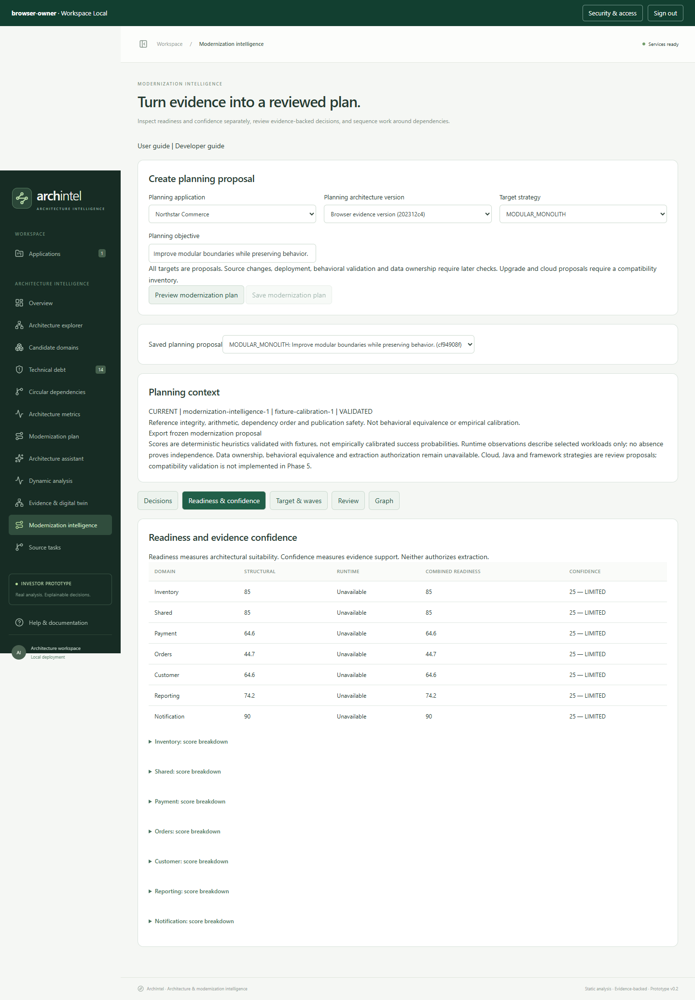

Phase 5 turns a captured architecture version into a reviewable modernization proposal. It does not edit source code or execute a modernization wave.
http://127.0.0.1:8000 and sign in.Saving the same version, objective, strategy and rules returns the existing proposal. Changing the objective or strategy creates another immutable proposal. Preview does not save a proposal.
New proposals open on Decision brief. It states the selected strategy came from the user, summarizes the captured evidence scope, compares all six strategy options, and surfaces evidence-backed risks, unknowns and questions for the next discovery step. Strategy statuses describe whether current evidence supports review, is conditional, or is insufficient; they are not success probabilities, cost estimates, or a ranking. Finding references include the underlying finding text. No automatic winner is selected.
Decisions shows an action and blockers for each domain. Explain why traces the action to findings and supporting facts. Fact links open canonical provenance, including retained or expired span references. The export contains all evidence IDs; the UI shows at most 50 fact links per explanation.
Readiness & confidence separates architecture suitability from strength of evidence:
A high readiness score does not approve extraction. Sparse observations do not prove unused classes or independent services.
Supported planning strategies are modular monolith, microservices, hybrid, cloud refactor, Java upgrade and framework upgrade. Modular monolith proposes in-process boundaries. Distributed targets leave deployment and contracts undecided pending review. Cloud and upgrade strategies require a compatibility inventory and receive manual-review decisions; this phase does not claim compatibility analysis.
Waves put dependency domains before their consumers. Cyclic groups remain together for remediation. Each wave includes readiness, confidence, difficulty, dependencies, prerequisites, blockers and a proposed impact. Impact remains a hypothesis until later source changes are validated.
Open Review, choose APPROVED_PLANNING, CHANGES_REQUESTED or REJECTED, and provide a note. Review history records the actor, time and revision. If another review was saved, refresh before submitting again.
Planning approval records agreement with the proposal. It does not authorize code changes, extraction or deployment. To change the strategy or objective, create another proposal. To change boundaries or evidence, capture a new architecture version and generate a new proposal.
The latest captured version for the application defines current planning context. Older proposals show SUPERSEDED and cannot receive new reviews. They remain readable and exportable. The exported proposal is frozen; current context and review history are separate from it.
Graph shows a separate persistent planning graph linking assessments, decisions, findings, fact/evidence references, prerequisites, blockers and waves. It preserves the Phase 4 evidence graph. Select a node or click a relationship to explore a bounded neighborhood.
If Neo4j is unavailable, the saved proposal, explanations, reviews and exports remain available from PostgreSQL. Restore Neo4j and click Rebuild planning graph. The displayed projection status is the last attempt; opening the graph checks current content. Planning projections are retried manually in this release.
ANALYSIS_READ; creation and review require ANALYSIS_WRITE.RUNTIME_READ, including explanations and exports.Create a static-only plan: runtime readiness should be Unavailable, and observation gaps should be visible. Inspect an explanation and open its fact provenance. Approve the planning proposal, then capture a successor version: the old proposal should become historical and reject further reviews. Confirm the original static report and evidence export remain unchanged.
